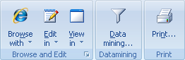
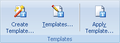
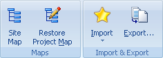
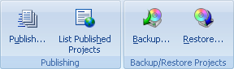

Utilice el menú Herramientas para acceder a complementos útiles de Portable Offline Browser.

Explorar Con - Contiene una lista de navegadores externos para explorar Proyectos descargados o ciertos archivos del Mapa de Proyecto.
Ver en & Editar en - Contiene una lista de herramientas externas para ver o editar archivos descargados desde el Mapa de Proyecto. Usted puede configurar la lista de herramientas en el diãlogo Opciones | Herramientas .
Extracción de Datos - Procesa los archivos descargados para extraer datos, convertir textos, realizar otras acciones utilizando una herramienta TextPipe externa.
Imprimir - Imprime todas las pãginas descargadas del Proyecto seleccionado .

Plantillas
Las Plantillas son Proyectos especiales que se pueden configurar para crear de forma simple sus tareas de descarga. Usted puede tener tantas plantillas como desee. Utilice el diãlogo de Plantillas para verlas. Si crea un nuevo Proyecto basado en alguna plantilla, el Proyecto tendrã la configuración de la plantilla a excepción del campo URL.
Usted puede usar plantillas para crear Proyectos con los botones Nuevo y Pegar en la pestaña Inicio de la Cinta de opciones.
Crear Plantilla - Abre el diãlogo de Propiedades de Proyecto para agregar una nueva plantilla al diãlogo Plantillas.
Plantillas - Abre el diãlogo Plantillas para administrarlas.
Aplicar Plantilla - Cambia la configuración del proyecto de acuerdo con una de las plantillas. Usted puede elegir la plantilla deseada y qué partes de ella se deben aplicar.

Mapa del Sitio - Comienza a descargar el Proyecto seleccionado. Sin embargo, los archivos descargados no se guardan en el disco. Sólo se usan para generar el Mapa de estructura del sitio.
Restaurar Mapa del Sitio - esta es una herramienta para restaurar un Mapa de Proyecto corrupto o perdido del Proyecto seleccionado. Revisa los archivos descargados en el disco y agrega al Mapa aquellos que corresponden a la configuración del Proyecto (Nivel, Filtros URL/de Archivo, etc.)
Exportación - Copia todos los archivos descargados para la Carpeta o Proyecto seleccionado a un directorio específico. Los archivos con información especial no se copian (descr.wd3, *.primary). También puede agregar extensiones estãndar a los archivos copiados o renombrarlos usando formatos de nombres de archivo 8+3 o Joilet. Otra función incluye la creación de Ayuda HTML, ZIP, EXE, archivos MHT y carga FTP.
Use el menú Inicio | Importar para agregar nuevos Proyectos, tomando sus URLs desde los Favoritos, Marcadores y Hot Lists de varios navegadores Web.

Publicar - Agregue su Proyecto a la colección de plantillas de usuarios en el sitio MetaProducts.com.
Proyectos Publicados - explore una lista de plantillas de Proyecto publicadas por usuarios.
Respaldar/Restaurar - Guarda o restaura el Proyecto en un archivo único, incluyendo su configuración, mapa y todos los archivos descargados. El archivo .boe resultante puede ser usado para transferir el Proyecto a otra computadora.